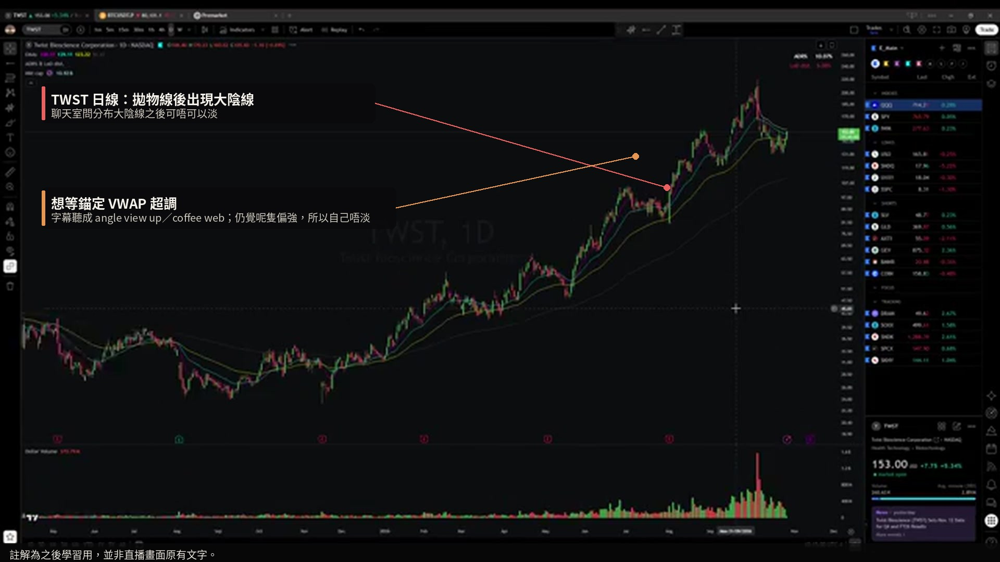

概要
形態可以討論，但仲有更弱嘅選擇
54:38 有人問，拋物線大升之後出現大分布陰線，可唔可以淡，並舉今日 TWST 為例。佢話如果要淡，會等錨定 VWAP 再超調，淡喺稍微高過呢條線或會最好；但自己唔會淡呢隻，因為外面仲有更弱嘅品種，而 TWST 仍然偏強。亦有可能只係第一個更低高位，但仍要證明。
字幕把 anchored VWAP 聽成 angle view up 或者 coffee web。
圖一
TWST 日線：拋物線後出現大陰線
直播 55:10

原話
What's your opinion on shorts after a big distribution candle after a long parabolic run? For example, TWST today. If I have to short, I will wait for the anchored VWAP, like to wait for it to even overshoot the anchored VWAP. Shorting maybe slightly above it will be the best. But I think I'm not going to short this thing, because there are the weaker names out there. Like it's still pretty strong. Yeah, but I don't know, like it could be also like the first lower highs, but it has to prove it. I think overshooting the anchored VWAP will be the best.
拋物線大升之後出現大分布陰線，你點睇淡倉？例如今日 TWST。如果我要淡，我會等錨定 VWAP，甚至等佢超調呢條錨定 VWAP。淡喺稍微高過呢條線或會最好。但我想我唔會淡呢隻，因為外面仲有更弱嘅品種。呢隻仍然偏強。不過我唔知，佢亦有可能只係第一個更低高位，但要證明到。我覺得超調錨定 VWAP 會係最好。
Whisper 把 anchored VWAP 聽成 angle view up／angle for you；YouTube 字幕亦有 coffee web 一類聽法。呢度按同一直播先前用詞同語境寫成錨定 VWAP，並標明聽音分歧。
點樣讀
「如果要淡」同「我自己唔淡」要分開讀。位置條件講咗，但即時結論係仲有更弱嘅選擇，而且第一個更低高位仍未證明。
畫面 Twist Bioscience Corporation 只當圖上文字。
附註
注意事項
- 錨定 VWAP 喺官方字幕同 Whisper 都聽得唔穩，本頁按語境同本站先前同一講者嘅用詞還原，並在該科標明。